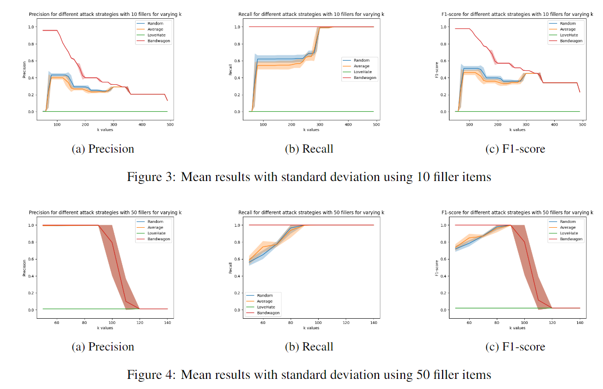

Projects ▼
Developer / （Ongoing）Interactive Progressive Visualization of t-SNE Optimization Process, TU Delft
2023-06月 - Now
 t-SNE is a powerful neighborhood-based nonlinear dimensionality reduction algorithm, suitable for extracting complex structures and clusters from high-dimensional data. t-SNE is widely applicable to general high-dimensional data; for instance, researchers have used it to process flow cytometry data, supporting the determination of cell categories through clustering results. The process of t-SNE clustering has even been employed to infer cell differentiation processes. However, despite having rich information, the formation of t-SNE clusters (i.e., the optimization process of the algorithm) has been less studied.
This project has designed a versatile visual analysis system, with a focus on optimizing processes similar to t-SNE in dimensionality reduction algorithms, providing a coherent and insightful experience for the in-depth exploration of high-dimensional data. By conceptualizing and designing a diverse set of visual expressions customized according to human visual perception and cognition, this system is applicable to various types of high-dimensional data.
To validate the cell differentiation hypothesis proposed in the paper, we have introduced an interactive mechanism for visual analysis and processing of over 40,000 high-dimensional flow cytometry samples from recent research. Currently, we are seamlessly integrating the developed system into an open-source visualization analysis framework called ManiVault Studio to expand interactive high-dimensional data analysis capabilities.
t-SNE is a powerful neighborhood-based nonlinear dimensionality reduction algorithm, suitable for extracting complex structures and clusters from high-dimensional data. t-SNE is widely applicable to general high-dimensional data; for instance, researchers have used it to process flow cytometry data, supporting the determination of cell categories through clustering results. The process of t-SNE clustering has even been employed to infer cell differentiation processes. However, despite having rich information, the formation of t-SNE clusters (i.e., the optimization process of the algorithm) has been less studied.
This project has designed a versatile visual analysis system, with a focus on optimizing processes similar to t-SNE in dimensionality reduction algorithms, providing a coherent and insightful experience for the in-depth exploration of high-dimensional data. By conceptualizing and designing a diverse set of visual expressions customized according to human visual perception and cognition, this system is applicable to various types of high-dimensional data.
To validate the cell differentiation hypothesis proposed in the paper, we have introduced an interactive mechanism for visual analysis and processing of over 40,000 high-dimensional flow cytometry samples from recent research. Currently, we are seamlessly integrating the developed system into an open-source visualization analysis framework called ManiVault Studio to expand interactive high-dimensional data analysis capabilities.
Team Leader / Anamoly Detection Based on Graphical Collaborative Filtering Rocommender System, TU Delft
2023-04 - 2023-07
 Recommendation systems play a crucial role in discovering new content based on user preferences, relying on existing rating systems. In collaborative filtering, calculating user similarity to obtain reliable recommendations introduces the possibility of malicious behavior. This project adjusts the Core-A algorithm, originally designed to detect anomalies in social networks, to identify false attacks in the user-item bipartite graph. The proposed Core-AB algorithm calculates DMP scores for nodes, addressing some constraints involving bipartite graph structures by modifications such as merging edges, exploring ranking strategies, and considering a method based on the densest subgraph (DSM). The contribution of the project lies in adapting Core-A to a bipartite graph, demonstrating its effectiveness in detecting false attacks and improving trust issues in online systems. During the project development, I led the research and design of an anomaly detection system for collaborative filtering, implementing various attack strategies to simulate illicit user behavior. This expanded existing research and introduced the Core-AB algorithm for bipartite anomaly detection. The system accurately detected three out of four attack strategies, achieving an F1 score exceeding 0.9 on a large scale.Team Leader / Visualization Tool "PowerViz", TU Delft
2022-11 - 2023-01
 The deadlift is a globally recognized strength sport that involves lifting a barbell in a predetermined manner, including components such as squats, bench presses, and deadlifts. Despite appearing to be a purely strength-based activity, knowledge, programming, and analysis play crucial roles.
This project focuses on enhancing the performance of powerlifting athletes, utilizing the competition dataset from Open Powerlifting to build a visualization tool. The project aims to address two main issues: how to examine and track the performance of athletes and compare it to the overall population, and which regions provide the best personal development environments.
During the project development, I led the project team in building a web visualization tool using D3, JavaScript, HTML, and CSS. This tool facilitates the identification and monitoring of weightlifting athletes' performance. It incorporates scatter plots, box plots, and a world weightlifting map for analyzing powerlifting athlete data from the Netherlands. It supports both numerical and categorical data, offering users high interactivity to locate data points, discover and explore data distributions, identify trends, and compare features and similarities freely.
The deadlift is a globally recognized strength sport that involves lifting a barbell in a predetermined manner, including components such as squats, bench presses, and deadlifts. Despite appearing to be a purely strength-based activity, knowledge, programming, and analysis play crucial roles.
This project focuses on enhancing the performance of powerlifting athletes, utilizing the competition dataset from Open Powerlifting to build a visualization tool. The project aims to address two main issues: how to examine and track the performance of athletes and compare it to the overall population, and which regions provide the best personal development environments.
During the project development, I led the project team in building a web visualization tool using D3, JavaScript, HTML, and CSS. This tool facilitates the identification and monitoring of weightlifting athletes' performance. It incorporates scatter plots, box plots, and a world weightlifting map for analyzing powerlifting athlete data from the Netherlands. It supports both numerical and categorical data, offering users high interactivity to locate data points, discover and explore data distributions, identify trends, and compare features and similarities freely.
Team Leader / Drone Market Analysis - ATMOS UAV, TU Delft
2022-04 - 2022-07
 During my studies at Delft University of Technology, I collaborated with the Faculty of Technology, Policy, and Management to conduct a detailed analysis of the startup company ATMOS UAV.
ATMOS is a technologically advanced geospatial startup headquartered in Leiden, Netherlands. It is supported by a young, innovative, and problem-solving-oriented team. The company focuses on high-quality, industry-standard vertical take-off and landing (VTOL) drones for measurement and mapping, capable of operating in the most adverse weather conditions.
Our study involved an analysis of ATMOS's opportunities and value propositions. We discussed academic derivatives, growth stages, diffusion patterns, examined the key turning points they faced, and explored the most promising niche markets. We also researched their sustainable and circular business model.
The research resulted in opportunity analysis canvases, value proposition canvases, sustainable business model canvases, and comprehensive analysis reports and presentations. This work showcased and enhanced my research capabilities in exploring new technology development with research teams, data analysis skills, and visualization abilities.
During my studies at Delft University of Technology, I collaborated with the Faculty of Technology, Policy, and Management to conduct a detailed analysis of the startup company ATMOS UAV.
ATMOS is a technologically advanced geospatial startup headquartered in Leiden, Netherlands. It is supported by a young, innovative, and problem-solving-oriented team. The company focuses on high-quality, industry-standard vertical take-off and landing (VTOL) drones for measurement and mapping, capable of operating in the most adverse weather conditions.
Our study involved an analysis of ATMOS's opportunities and value propositions. We discussed academic derivatives, growth stages, diffusion patterns, examined the key turning points they faced, and explored the most promising niche markets. We also researched their sustainable and circular business model.
The research resulted in opportunity analysis canvases, value proposition canvases, sustainable business model canvases, and comprehensive analysis reports and presentations. This work showcased and enhanced my research capabilities in exploring new technology development with research teams, data analysis skills, and visualization abilities.
Developer & UI Designer / Serious Game "Stranded", TU Delft
2021-11 - 2022-02
 The potential biases against different groups have been increasingly recognized in many areas of our society. Recognizing these biases is a challenging task as they are subconscious and often avoided.
We introduced a serious game called "Stranded," in which players are guided to uncover and acknowledge potential implicit biases. Players face challenges inspired by real-world scenarios that trigger biased reactions. In these scenarios, they must group individuals deemed suitable for specific tasks within limited time and knowledge constraints, all within the context of team survival.
After each round, hints reveal the ideal candidates for each task. Ultimately, if players ignore these hints and rely on their previous biases, they won't survive the challenges. This motivates players to consider the inherent strengths of characters rather than relying on preconceived biases. "Stranded" proves to be an effective tool for sparking interesting classroom discussions. It anonymously collects all players' decisions and displays comprehensive results for each task, facilitating conversations about decision motivations.
The evaluation of "Stranded" indicates its effectiveness in prompting players to make biased judgments, with a significant portion of players becoming more aware of their biases after playing the game. In this project, I contributed to conceptualizing and implementing an interactive serious game, designed the logic for data presentation, refined UI components, and ensured seamless integration of functionalities. I actively drove the agile development iteration process, focusing on optimizing user interactions, and enhanced the overall user experience through continuous improvement and usability testing. The final project was officially showcased at the ISAGA2022 conference.
The potential biases against different groups have been increasingly recognized in many areas of our society. Recognizing these biases is a challenging task as they are subconscious and often avoided.
We introduced a serious game called "Stranded," in which players are guided to uncover and acknowledge potential implicit biases. Players face challenges inspired by real-world scenarios that trigger biased reactions. In these scenarios, they must group individuals deemed suitable for specific tasks within limited time and knowledge constraints, all within the context of team survival.
After each round, hints reveal the ideal candidates for each task. Ultimately, if players ignore these hints and rely on their previous biases, they won't survive the challenges. This motivates players to consider the inherent strengths of characters rather than relying on preconceived biases. "Stranded" proves to be an effective tool for sparking interesting classroom discussions. It anonymously collects all players' decisions and displays comprehensive results for each task, facilitating conversations about decision motivations.
The evaluation of "Stranded" indicates its effectiveness in prompting players to make biased judgments, with a significant portion of players becoming more aware of their biases after playing the game. In this project, I contributed to conceptualizing and implementing an interactive serious game, designed the logic for data presentation, refined UI components, and ensured seamless integration of functionalities. I actively drove the agile development iteration process, focusing on optimizing user interactions, and enhanced the overall user experience through continuous improvement and usability testing. The final project was officially showcased at the ISAGA2022 conference.
Research Assistant / Iris Recognition Based on Siamese CNN, Central University of Finance and Economics, Beijing
2019-10 - 2020-03
 Machine learning interpretability is an emerging and meaningful field. As a preliminary work for interpretability research, this project builds a complete pipeline of data collection, annotation, training, and classification based on iris data.
In this project, I designed and built a Siamese Convolutional Neural Network (CNN) to demonstrate an effective biometric recognition system using self-collected iris data.
Since the collected data is raw and unlabeled, I developed a user-friendly front-end application for the data labeling step: using a combination of HTML, JavaScript, and Django to produce an interactive, visually intuitive graphical user interface. , ensuring efficient data annotation.
Finally, iris recognition is implemented through PyTorch and OpenCV.
Machine learning interpretability is an emerging and meaningful field. As a preliminary work for interpretability research, this project builds a complete pipeline of data collection, annotation, training, and classification based on iris data.
In this project, I designed and built a Siamese Convolutional Neural Network (CNN) to demonstrate an effective biometric recognition system using self-collected iris data.
Since the collected data is raw and unlabeled, I developed a user-friendly front-end application for the data labeling step: using a combination of HTML, JavaScript, and Django to produce an interactive, visually intuitive graphical user interface. , ensuring efficient data annotation.
Finally, iris recognition is implemented through PyTorch and OpenCV.